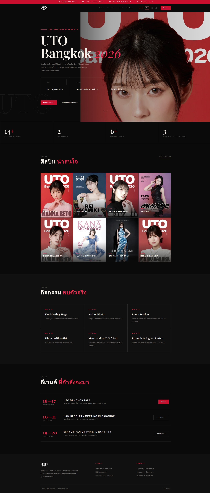
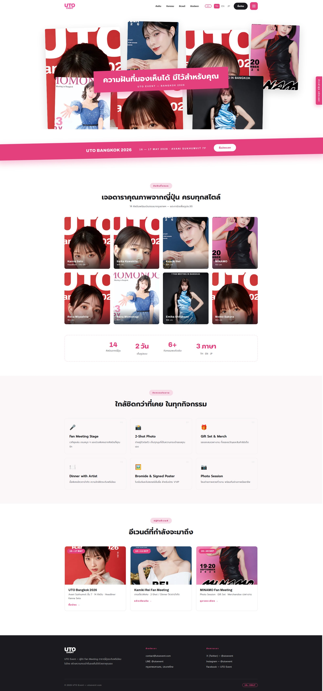
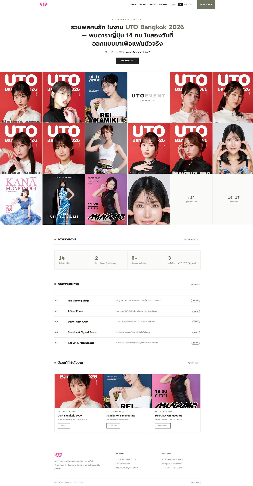
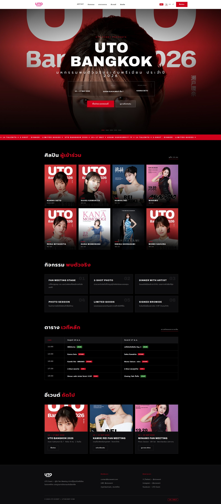
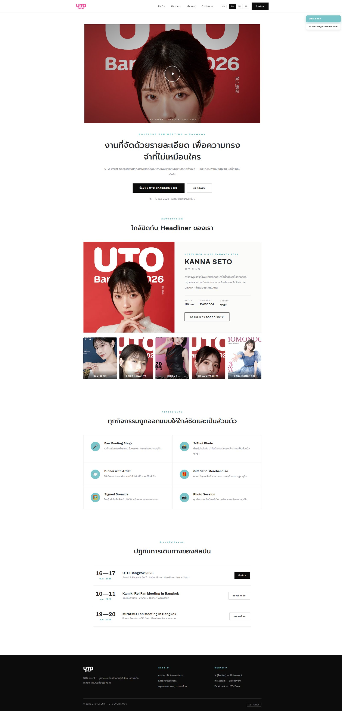
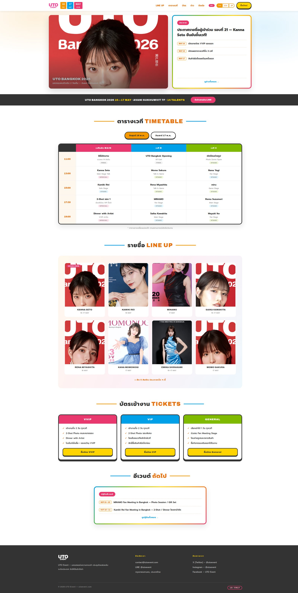
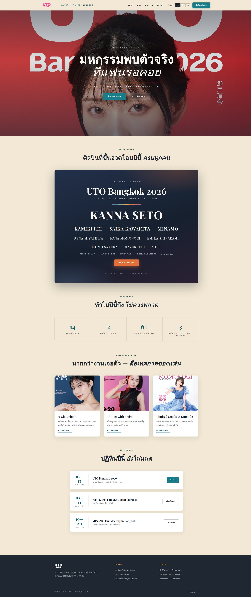
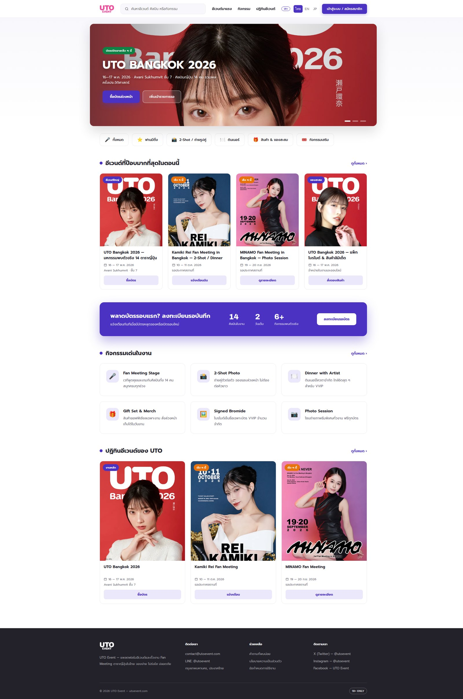
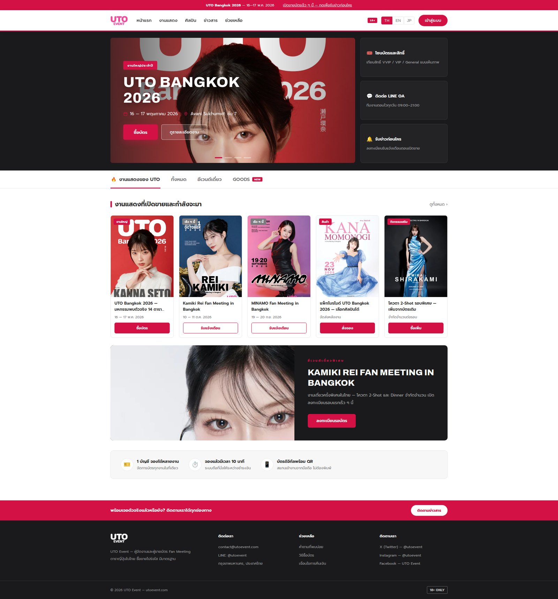

STYLE 01Dark Luxury · ดำ-แดง
บรรยากาศหรูตระการตาแบบ talent agency ชั้นนำ — typography serif ใหญ่ แสงเงาแบบ editorial เน้น Headliner เดี่ยว ๆ เหมาะกับภาพลักษณ์พรีเมียมสุดของ UTO
เปิดดูแบบนี้ →
STYLE 02Pink Collage · ขาว-ชมพู
กระดานรูปศิลปินกระจายแบบ collage พร้อมแถบสโลแกนชมพูเฉียง — สีชมพูตรงกับโลโก้ UTO พอดี ให้ความรู้สึกสนุก ใกล้ชิด เข้าถึงแฟนง่าย
เปิดดูแบบนี้ →
STYLE 03White Minimal Grid · ขาวล้วน
Grid ศิลปินเต็มจอแบบเรียบแต่ทรงพลัง โชว์โปสเตอร์จริงทุกใบ — ดูเป็นทางการ น่าเชื่อถือ เหมาะกับการขยายแกลเลอรีศิลปินในอนาคต
เปิดดูแบบนี้ →
STYLE 04Cinematic Black · ดำ-วิดีโอ hero
Hero เต็มจอแบบมูฟวี่ + nav ขาว + แถบข่าววิ่ง พร้อมตารางเวทีหลักในตัว — จุดแข็งคือ "อลังการงานสร้าง" ดึงดูดสายตาแฟนทันทีที่เข้าเว็บ
เปิดดูแบบนี้ →
STYLE 05Boutique Spotlight · ขาว-ดำ
พื้นขาวสะอาด ตัดกับสื่อดำใหญ่กลางหน้าแบบงานบูทีค เน้น Spotlight ศิลปินรายคน — เล่าเรื่องช้า ๆ ให้แฟนได้ซึมซาบ แต่ง่ายต่อการอัปเดตคอนเทนต์
เปิดดูแบบนี้ →
STYLE 06Festival Timetable · หลากสี
DNA ของงานเทศกาล — Timetable ตารางเวที 3 เวที 2 วันสลับดูได้ + Line Up + การ์ดประกาศข่าว เหมาะกับงานใหญ่หลายเวทีแบบ UTO Bangkok
เปิดดูแบบนี้ →
STYLE 07Poster Lineup · cream + serif
มาตรฐานสากลแบบ Coachella — โปสเตอร์ Lineup จัดลำดับตัวหนังสือสวยงาม ครีม-เทาอมฟ้าสง่างาม เหมาะกับการประกาศชื่อศิลปินทีละรอบ
เปิดดูแบบนี้ →
STYLE 08Thai Marketplace · ม่วง indigo
UX แบบแพลตฟอร์มอีเวนต์ไทยที่คนไทยคุ้นมือ — search bar, หมวดหมู่, การ์ดอีเวนต์, ปุ่มลงทะเบียนรอบัตร เหมาะกับเป้าหมายยาวของ UTO ที่จะเป็นแพลตฟอร์มขายบัตรเอง
เปิดดูแบบนี้ →
STYLE 09Ticket Portal · ขาว-แดง
โครงสร้าง ticket portal มาตรฐาน — แถบประกาศแดง, hero + sidebar สิทธิ์ประโยชน์, tab งานแสดง, การ์ดงานพร้อมปุ่มซื้อ — แฟนคอนเสิร์ตไทยคุ้นเคยที่สุด
เปิดดูแบบนี้ →